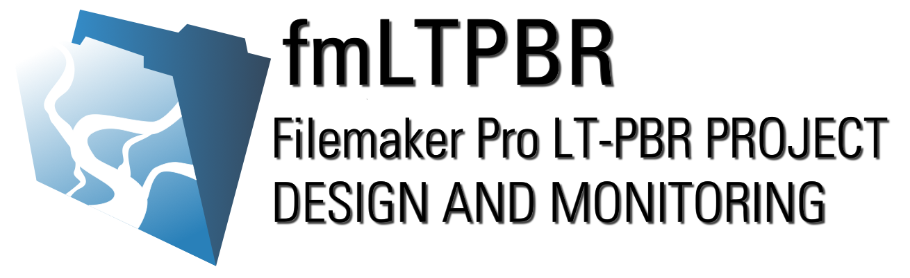

The fmLTPBR database application supports a set of attributes and survey methods that can be used to facilitate the design, management, and monitoring of process based riverscape restoration projects. The approach draws heavily on the conceptualization of low-tech process-based restoration (LT-PBR) practices developed by Wheaton and others (2019) and operationalizes those ideas through development of a unified framework for consistently documenting and presenting restoration information throughout a project lifespan. The protocol has been developed with the following intent:
Present an accessible and flexible set of design attributes and monitoring survey protocols that can be consistently applied to the design, implementation, and monitoring of LT-PBR projects.
Develop a flexible data collection and management solution that encourages adoption of the survey protocols by a diverse set of restoration practitioners and that supports common tasks in proposal development, permit acquisition, and fulfillment of land management agency monitoring and reporting requirements.
Advance the science and art of LT-PBR practices by encouraging the adoption of a standardized design, monitoring, and approach for the calculation and interpretation of summary metrics that describe project outcomes and effectiveness.